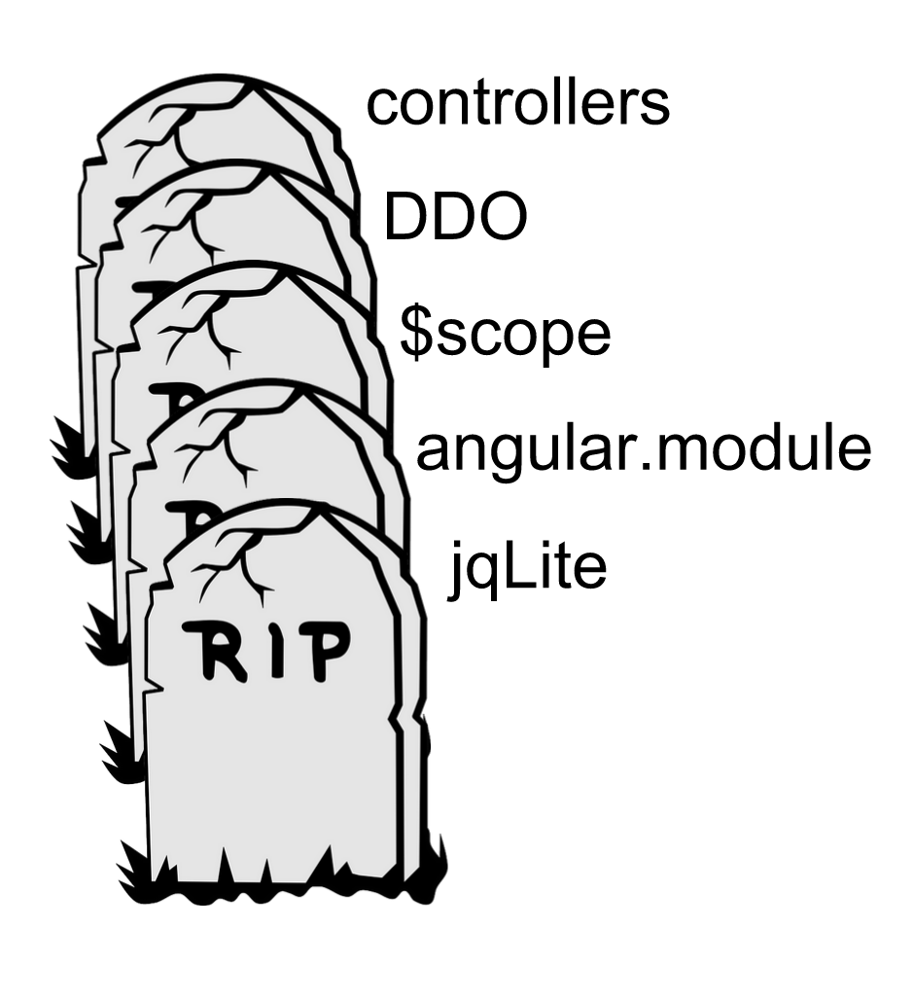

Formation AngularJS
ES6 - Typescript - Angular2
Bertrand GAILLARDSapiens RWD - @SapiensRWD
ES6
[ou ES2015]
let
function getPonyFullName(pony) {
if (pony.isChampion) {
let name = 'Champion ' + pony.name;
return name;
}
// name is not accessible here
return pony.name;
}constant
const PONIES_IN_RACE = 6;
PONIES_IN_RACE = 7; // SyntaxError
const PONY = { };
PONY.color = 'blue'; // works
const PONY = { };
PONY = {color: 'blue'}; // SyntaxError
const PONIES = [];
PONIES.push({ color: 'blue' }); // works
PONIES = []; // SyntaxError[ les types en javascript ]
6 types primitifs:
Boolean(booléen)Number(nombre)String(chaine de caractères)Symbol(symbole - nouveauté ES6)nullundefined
Et le type Object (function, RegExp, {})
arrow function
var numbers = [1,2,3,4,5];
var timesTwo = numbers.map(function (number) {
return number * 2;
});
console.log(timesTwo); // [2, 4, 6, 8, 10]
//
var numbers = [1,2,3,4,5];
var timesTwo = numbers.map((number) => number * 2);
console.log(timesTwo); // [2, 4, 6, 8, 10]
//
function FooCtrl (FooService) {
this.foo = 'Hello';
FooService.doSomething((response) => this.foo = response);
}template
Utilisation du backtick (Alt + 7)
- Permet le multiligne sans les
+ - Permet d'insérer des variables du scope courant
function sayHiTo(firstname, lastname) {
return `
Hi ${firstname} ${lastname}, how are you today?
`;
}Paramétre par défaut
function setBackgroundColor(element, couleur) {
couleur = couleur || 'geen';
element.style.backgroundColor = couleur;
}
function setBackgroundColor(element, couleur = 'green') {
element.style.backgroundColor = couleur;
}
setBackgroundColor(unDiv); // la couleur sera 'green'
setBackgroundColor(unDiv, undefined); // la couleur sera 'green'
setBackgroundColor(unDiv, 'blue'); // la couleur sera 'blue'class
class Animal {
constructor(size) {
this.size = size;
}
age() {
return 10;
}
}
class Pony extends Animal {
static defaultSpeed() {
return 10;
}
constructor(color = 'green') {
super(4);
this._color = color;
}
age() {
return super.age() + 10;
}
get color() {
console.log('get color');
return this._color;
}
set color(newColor) {
console.log(`set color ${newColor}`);
this._color = newColor;
}
}
let speed = Pony.defaultSpeed();
let pony = new Pony();
pony.color = 'red'; // set color red
console.log(pony.color); // get colorDestructuring assignment
var {a, b} = {a: 1, b: 2};
var [a, b] = [1, 2];
var a = 1;
var b = 3;
[a, b] = [b, a];
var o = {p: 42, q: true};
var {p, q} = o;
console.log(p); // 42
console.log(q); // true
//
var metadata = {
title: "Scratchpad",
translations: [
{
locale: "de",
localization_tags: [ ],
last_edit: "2014-04-14T08:43:37",
url: "/de/docs/Tools/Scratchpad",
title: "JavaScript-Umgebung"
}
],
url: "/en-US/docs/Tools/Scratchpad"
};
var { title: englishTitle, translations: [{ title: localeTitle }] } = metadata;
console.log(englishTitle); // "Scratchpad"
console.log(localeTitle); // "JavaScript-Umgebung"Rest operator (...)
let tab = ['a', 'b', 'c'];
function f(param1, param2, param3) {
// a b c
}
f(...tab);
//
let tab2 = [...tab, 'd', 'e'];
//
function fun1(...theArgs) {
console.log(theArgs.length);
}
fun1(); // 0
fun1(5); // 1
fun1(5, 6, 7); // 3
module / namespace
//------ common/lib.js ------
export const sqrt = Math.sqrt;
export function square(x) {
return x * x;
}
export function diag(x, y) {
return sqrt(square(x) + square(y));
}
//------ main.js ------
import { square, diag } from 'common/lib';
console.log(square(11)); // 121
console.log(diag(4, 3)); // 5Exercice
http://tagtree.io/courses/expert-es6/
Pour aller plus loin:
http://es6katas.org/
Transpiler
- Conversion en
ES5 - Uniquement du sucre syntaxique
- Babel ou Traceur
- Fonctionne seul avec
NodeJSou bien avec des tâchesGrunt/Gulp/Brunch/... - Utilisation de fichiers sourcemap pour débugger

Systéme de modules ES6
Avantages
Permet de mieux structurer son application
Evite des conflits grâce aux namespaces:
import { double } from 'common/mymodule';
import { double as doubleAlias } from 'company/utils/library';
double();
doubleAlias();Inconvénients
Ne fonctionne pas dans les navigateurs actuels (car ES5)
De (trop?) nombreux outils, librairies et standards :
CommonJS, RequireJS, AMD, Browserify, SystemJS, Webpack,... WTF!
Explications 1/2
CommonJS et AMD sont des "normes d'écriture" ES5 de modules.
CommonJS (synchrone) est populaire avec NodeJS.
AMD (asynchrone) est plus populaire sur navigateurs.
Explications 2/2
RequireJSest un loader de modulesAMD.Browserifyest un loader de modulesCommonJS. (utile pour faire tourner du codeNodeJSsur le navigateur. cf: accès à toutes les lib dispo via npm)SystemJSest un loader universel de modulesES6/CommonJS/AMD.Webpackest un loader universel de modulesES6/CommonJS/AMD. Il fait également pleins d'autres choses qui remplacentGrunt/Gulp.
Typescript
Transpiler également comme Babel/Traceur
Dispose des nouveautés ES6
Dispose de certaines nouveautés ES7 (Decorator)
Typage facultatif de tous les objets
class Movie {
name:string
year:number
score:number
constructor(name:string, year:number, score:number) {
this.name = name;
this.year = year;
this.score = score;
}
}
function show(m: Movie, type) {
console.log(m, type);
}
show('ff', 44); // transpilation error
show(new Movie('Snatch', 1999, 4.2), 'sx') // no errorclass Movie {
constructor(public name:string, public year:number, private score:number) {}
}
function show(m: Movie) {
console.log(m);
}
show('ff'); // transpilation error
let m:Movie = new Movie('Snatch', 1999, 4.2);
show(m) // no error
console.log(m.name);
console.log(m.year);
console.log(m.score); // transpilation errorL'accès à une propriété private d'un objet lévera une erreur à la transpilation mais pas à l'éxécution.
- Utilisation des types et ES6/ES7 optionnelle.
- Code ES5 actuel 100% compatible.
- Autocomplete dans l'IDE.
- Erreurs dans la console au moment de la transpilation.
- Léve des erreurs avec l'exécution dans le navigateur.
- Gain de temps et de robustesse.
Les erreurs levées par Typescript sont 'informatives', le JS est quand même généré et l'on peut l'utiliser (à nos risques et périls)!
Angular2
(alpha 44)
- API non définitive.
- Ne pas utiliser pour projets en Prod.
- Assez avancé pour s'amuser avec et découvrir.
- Une première Beta devrait arriver trés vite.
- Réecriture totale du framework.
- Ecrit en Typescript.
- Utilisable en ES5 / ES6 / Typescript
- Gain de performance énorme.
- Meilleure compatibilité avec les standards actuels/futurs du Web.
Compatible avec spécifications des Web Components
- Custom elements
- Templates
- Imports
- Shadow DOM
https://developer.mozilla.org/fr/docs/Web/Web_Components
Séparation entre Application layer et Render layer:
-
Rendu coté serveur (app isomorphique / JS universel):
- Meilleur temps de chargement.
- SEO
- Partage de liens Facebook/Twitter/..
-
Utilisation des Web Workers sur les navigateurs:
- Evite de bloquer l'interface lors d'opérations lourdes
- Utilisation de
Render layerdifférent pour applications mobile natives par exemple
De nombreux disparus..
Pour le meilleur !
- Tout est composant.
- Application représentée par un arbre de composants.
- Utilisation de métadonnées pour configurer un composant.
En ng2, un composant est équivalent à une directive avec un scope isolé en ng1.
Un composant ng2 en Typescript
import {Component, View} from 'angular2/angular2';
@Component({
selector: 'my-app'
})
@View({
template: `
`
})
class MyAppComponent {
constructor() {
console.log('I am a component!');
}
}Le nom du composant est différent de son selector.
Un composant ng2 en ES5
function MyAppComponent() {
console.log('I am a component!');
}
MyAppComponent.annotations = [
new angular.ComponentAnnotation({
selector: 'my-app'
}),
new angular.ViewAnnotation({
template: "" +
" This is my first Angular2 app
" +
" "
})
];Communication entre les composants
Un composant communique:
- avec ses enfants grâce aux
property binding. - et avec son parent grâce aux
event binding.
property binding
- Accès à toutes les propriétés des éléments HTML.
- Possibilité de définir de nouvelles propriétés.
Syntaxe lternative:
Examples 1/2
My First Angular2 app
My First Angular {{ ngVersion }} app
Examples 2/2
Possibilité de définir de nouvelles propriétés
@Component({
selector: 'beer-item',
inputs: ['beer']
})
@View({
template: `
{{beer}}
`
})
class BeerItem {
beer: String;
}event binding
- Accès à tous les événements des éléments HTML.
- Possibilité de définir de nouveaux événements.
Syntaxe lternative:
Examples 1/2
Examples 2/2
@Component({
selector: 'beerItem',
inputs: ['beer'],
outputs: ['selectBeer']
})
@View({
template: `
{{beer<}}
`
})
class BeerItem {
beer: String;
selectBeer: EventEmitter;
selectItem() {
this.selectBeer.next(this.beer);
}
}Disparition de 43 directives ng1!
Toutes les réécritures de propriétés/contenus d'éléments du DOM:
ng-bind->[textcontent]ng-src->[src]ng-href->[href]ng-style->[style]- ...
Tous les évenements utilisateurs:
ng-click->(click)ng-change->(change)ng-mouseover->(mouseover)ng-blur->(blur)- ...
Autres:
ng-controller-> n'existe plus, on créé des composants!ng-hide->[hidden]
Zone JS
Librairie externe qui s'occupe de catcher toutes les opérations asynchrones (event user, ajax, timeout, interval) et de prévenir angular2 pour qu'il mette à jour la vue.
https://github.com/btford/zone.js/Les services
Simples classes ES6.
Disparues les 5 manières différentes de déclarer un service avec ng1